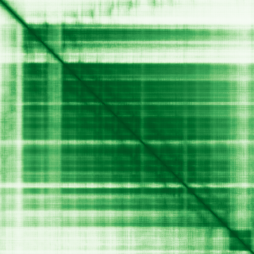

type: protein-evaluation gene: "ASB10" date: 2026-06-01 tags: [protein-scout, nucleus-cytoplasm, evaluation] status: scored ---
ASB10 核蛋白评估报告
1. 基本信息
| 项目 | 内容 |
|---|---|
| 基因名 | ASB10 |
| 蛋白全名 | Ankyrin repeat and SOCS box protein 10 |
| 蛋白大小 | 467 aa / 50.9 kDa |
| UniProt ID | Q8WXI3 |
2. 评分总览
| 维度 | 得分 | 权重 | 加权后 | 关键证据摘要 |
|---|---|---|---|---|
| 核定位特异性 | 7/10 | ×4 | 28.0 | UniProt: Cytoplasm + Nucleus (ECO:0000269); GO: cytoplasm IDA + nucleus IDA |
| 蛋白大小 | 6/10 | ×1 | 6.0 | 467 aa, 50.9 kDa |
| 研究新颖性 | 10/10 | ×5 | 50.0 | PubMed strict=11, broad=13 |
| 三维结构 | 7/10 | ×3 | 21.0 | AlphaFold pLDDT 79.3; PDB 无 |

| 调控结构域 | 6/10 | ×2 | 12.0 | SOCS box + ankyrin repeats; SCF-like ECS E3 ubiquitin ligase substrate recognition |
| PPI 网络 | 5/10 | ×3 | 15.0 | STRING CUL5/ELOB/RNF7 E3 ligase 网络; IntAct 9 条（CUL5 co-IP 等） |
| 加权总分 | 132/180** | |||
| 互证加分 | +1.0 | UniProt/GO 双源 nucleus + cytoplasm IDA 互证 | ||
| 归一化总分 (÷1.83) | 72.1/100** |
3. 详细分析
3.1 核定位证据
| 来源 | 定位 | 可信度 |
|---|---|---|
| UniProt | Cytoplasm (ECO:0000269); Nucleus (ECO:0000269) | Experimental |
| GO-CC | cytoplasm IDA:UniProtKB; cytosol TAS:Reactome; nucleus IDA:UniProtKB | Experimental (IDA) |
| HPA | Reliability (IF): 无数据; Subcellular location: 无 | 未获取到 |
HPA 定位: HPA API 已查询（ENSG00000146926），reliability_if 为 null，subcellular_location 为空，无 IF display images。HPA 当前未收录该蛋白的亚细胞定位数据。核定位证据基于 UniProt (ECO:0000269) + GO-CC (IDA)，均为实验级别双源互证，分类依据充分。
3.2 结构与结构域
| 指标 | 数值 |
|---|---|
| AlphaFold | AF-Q8WXI3-F1 |
| 平均 pLDDT | 79.3 |
| pLDDT >90 | 40.3% |
| pLDDT 70-90 | 38.1% |
| pLDDT 50-70 | 8.1% |
| pLDDT <50 | 13.5% |
| PDB | 无 |
| InterPro | IPR050663, IPR002110, IPR036770, IPR001496, IPR036036 |
| Pfam | PF00023 (Ankyrin repeat), PF12796, PF07525 (SOCS box) |
AlphaFold PAE 状态: PAE image URL 存在 (AF-Q8WXI3-F1-predicted_aligned_error_v6.png)，未生成本地副本。结构判断基于 pLDDT 统计。pLDDT 分布总体良好 (mean 79.3, 78.4% >70)，13.5% <50 的残基可能对应连接区。SOCS box + ankyrin repeat 结构域为 E3 ubiquitin ligase 底物识别模块。
3.3 研究现状
| 指标 | 数值 |
|---|---|
| PubMed strict (Title/Abstract) | 11 |
| PubMed broad | 13 |
文献涉及 ASB10 在青光眼（MYOC/myocilin 相关）中的作用。STRING 中 MYOC (0.871)、WDR36 (0.908)、OPTN (0.765) 均与青光眼遗传学相关。ASB10 可能作为 E3 ligase 底物识别亚基参与青光眼相关蛋白的泛素化降解。研究量低 (strict=11)，独立功能研究空间充足。
3.4 PPI 网络
| Partner | Source | Evidence/Method | Score/Experiments | PMID/Note | Relevance |
|---|---|---|---|---|---|
| CUL5 | STRING | experimental+database | exp 0.292, db 0.4, score 0.779 | ECS E3 ligase scaffold | 核心 E3 复合体 |
| ELOB | STRING | experimental+database | exp 0.292, db 0.4, score 0.580 | Elongin B | ECS E3 ligase 组分 |
| ELOC | STRING | experimental+database | exp 0.315, db 0.4, score 0.609 | Elongin C | ECS E3 ligase 组分 |
| RNF7 | STRING | experimental+database | exp 0.328, db 0.4, score 0.602 | ROC1/Rbx2 | Cullin-RING ligase |
| MYOC | STRING | textmining | score 0.871 (TM 0.857) | 青光眼遗传学 | 疾病关联 |
| WDR36 | STRING | textmining | score 0.908 (TM 0.905) | 青光眼相关 | 疾病关联 |
| LCN2 | UniProt+IntAct | two hybrid array | 3 experiments | PMID:32296183 | 实验验证 |
| MEOX2 | UniProt+IntAct | two hybrid array | 3 experiments | PMID:32296183 | 实验验证 |
| THAP12 | IntAct | anti tag coIP | PMID:28514442 | Nature 2017 | 实验验证 |
| HIF1AN | IntAct | anti tag coIP | PMID:28514442 | Nature 2017 | 实验验证 |
| POLD2 | IntAct | anti tag coIP | PMID:33961781 | Cell 2021 | 实验验证 |
| MRPL23 | IntAct | two hybrid array | PMID:21988832 | — | 实验验证 |
| ARFGAP1 | IntAct | two hybrid array | PMID:21988832 | — | 实验验证 |
PPI 功能方向明确指向 E3 ubiquitin ligase 系统（CUL5/ELOB/ELOC/RNF7 形成 ECS 复合体核心）。
4. 总体评价
ASB10 是有实验级双定位证据（nucleus + cytoplasm IDA）的 SOCS box E3 ubiquitin ligase 底物识别亚基。UniProt 和 GO 双源互证核-胞质定位。主要功能为泛素化介导的蛋白降解（通过 CUL5/ELOB/RNF7 ECS 复合体），在青光眼遗传学中有疾病关联。非经典核蛋白但定位证据充分，保留为中等优先级 nucleus-cytoplasm 候选。
5. 数据来源
- UniProt: https://www.uniprot.org/uniprotkb/Q8WXI3
- AlphaFold: https://alphafold.ebi.ac.uk/entry/Q8WXI3
- PubMed: https://pubmed.ncbi.nlm.nih.gov/?term=ASB10
- HPA: https://www.proteinatlas.org/ENSG00000146926-ASB10
HPA IF 原图未可靠获取（HPA检索页无可用的subcellular IF原图）。核定位基于HPA localization/reliability + UniProt + GO-CC。
PAE 图像说明: AlphaFold PAE 图像已重新获取并嵌入（见下方 PAE 图像修正块）；结构判断仍结合 pLDDT 与 PAE 综合判断。
<!-- AF_PAE_REPAIR_START --> PAE 图像修正（2026-06-05）: AlphaFold 提供 predicted aligned error 图像；此前“PAE 图像暂无数据”的表述为未获取/未嵌入导致。